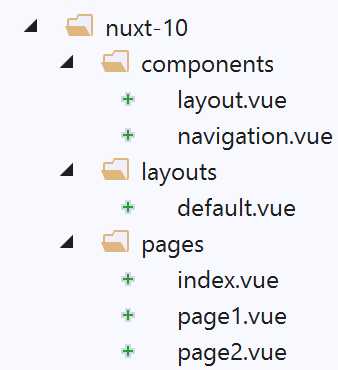
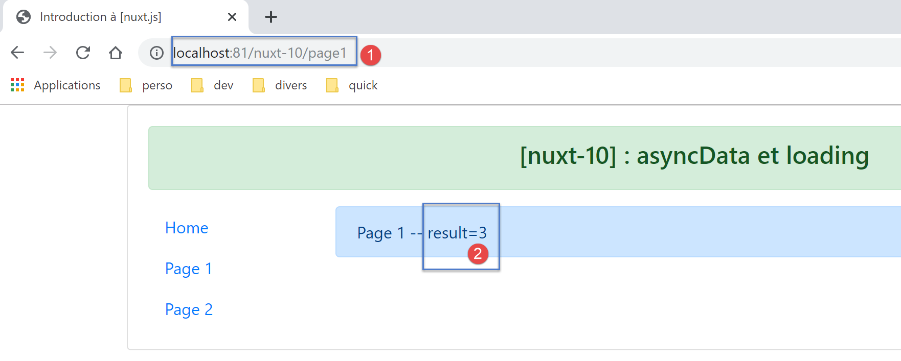
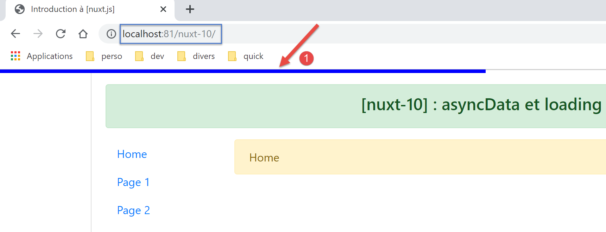
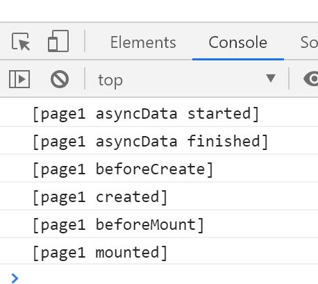

13. Exemple [nuxt-10] : asyncData et loading
La fonction [asyncData] dans une page permet de charger de façon asynchrone des données souvent externes. [nuxt] attend la fin de la fonction [asyncData] avant de commencer le cycle de vie de la page. Celle-ci n’est donc rendue qu’une fois les données externes obtenues. Elle est exécutée aussi bien par le serveur que par le client avec les règles suivantes :
- lorsque la page est demandée directement au serveur, seul le serveur exécute la fonction [asyncData] ;
- ensuite lors de la navigation client, seul le client exécute la fonction [asyncData] ;
Au final seul l’un des deux, client ou serveur, exécute la fonction. Par ailleurs, quand c’est le client qui exécute la fonction [asyncData], [nuxt] affiche une barre de progression qui peut être paramétrée.
La fonction [asyncData] permet de délivrer aux moteurs de recherche des pages avec leurs données ce qui les rend plus signifiantes.
L’exemple [nuxt-10] est obtenu initialement par recopie du projet [nuxt-01] :

Seule la page [page1] évolue.
13.1. La page [page1]
Le code de la page [page1] est le suivant :
<!-- vue n° 1 -->
<template>
<Layout :left="true" :right="true">
<!-- navigation -->
<Navigation slot="left" />
<!-- message-->
<b-alert slot="right" show variant="primary"> Page 1 -- result={{ result }} </b-alert>
</Layout>
</template>
<script>
/* eslint-disable no-console */
/* eslint-disable nuxt/no-timing-in-fetch-data */
import Navigation from '@/components/navigation'
import Layout from '@/components/layout'
export default {
name: 'Page1',
// composants utilisés
components: {
Layout,
Navigation
},
// données asynchrones
asyncData(context) {
// log
console.log('[page1 asyncData started]')
// on rend une promesse
return new Promise(function(resolve, reject) {
// on simule une fonction asynchrone
setTimeout(function () {
// on rend le résultat asynchrone - un nombre aléatoire ici
resolve({ result: Math.floor(Math.random() * Math.floor(100)) })
// log
console.log('[page1 asyncData finished]')
}, 5000)
})
},
// cycle de vie
beforeCreate() {
console.log('[page1 beforeCreate]')
},
created() {
console.log('[page1 created]')
},
beforeMount() {
console.log('[page1 beforeMount]')
},
mounted() {
console.log('[page1 mounted]')
}
}
</script>
- lignes 26-39 : la fonction [asyncData]. Nous avons déjà étudié cette fonction (cf paragraphe lien). Elle est exécutée avant le cycle de vie de la page. Pour cette raison, on ne peut utiliser le mot clé [this] dans la fonction ;
- ligne 30 : elle doit rendre une promesse [Promise] ou utiliser la syntaxe async / await ;
- lignes 32-37 : la fonction asynchrone de la promesse est simulée avec une attente de 5 secondes (ligne 37) ;
- ligne 34 : le résultat de la fonction asynchrone est rendu sous la forme d’un objet {result :...}. L’objet asynchrone rendu par la fonction [asyncData] est intégré dans l’objet [data] de la page. C’est pourquoi l’objet [result] est-il disponible ligne 7 du template alors même que la page n’avait pas défini d’objet [data] ;
13.2. Configuration de la barre de progression de [asyncData]
Lorsque la page [page1] est la cible d’une navigation au sein du client (mode SPA), le client exécute la fonction [asyncData] et [nuxt] affiche alors une barre de progression qu’elle cache lorsque la fonction [asyncData] a rendu son résultat. La propriété [loading] du fichier [nuxt.config.js] permet de configurer cette barre :
loading: {
color: 'blue',
height: '5px',
throttle: 200,
continuous: true
},
Par défaut, l’image d’attente de [nuxt] est une barre de progression, faisant la largeur de la page. Cette barre a une couleur et une épaisseur. Le trait coloré grandit progressivement de 0 % à 100 % de sa taille, plus ou moins vite donc selon la durée de l’attente.
- ligne 2 : fixe la couleur de la barre de progression ;
- ligne 3 : fixe l’épaisseur de la barre en pixels ;
- ligne 4 : [throttle] est le délai en millisecondes avant que l’animation ne démarre. Cela permet de ne pas avoir d’image d’animation lorsque la fonction [asyncData] rend son résultat rapidement ;
- ligne 5 : [continuous] fixe le comportement de l’animation de la barre de progression. Par défaut, la barre grandit progressivement de 0 % à 100 % de sa taille, plus ou moins vite selon la durée de l’attente. Avec [continuous:true], le barre colorée grandit à vitesse constante de 0 à 100 % de sa taille, puis recommence tant que la fonction [asyncData] n’a pas rendu son résultat ;
13.3. Exécution
Lançons l’application, puis demandons, à la main, au serveur la page [page1] :

Les logs sont les suivants :

- on voit que seul le serveur [1] a exécuté la fonction [asyncData] et il l’a fait avant le cycle de la page ;
Maintenant examinons la page envoyée par le serveur (code source) :
<!doctype html>
<html data-n-head-ssr>
<head>
<title>Introduction à [nuxt.js]</title>
<meta data-n-head="ssr" charset="utf-8">
<meta data-n-head="ssr" name="viewport" content="width=device-width, initial-scale=1">
<meta data-n-head="ssr" data-hid="description" name="description" content="ssr routing loading asyncdata middleware plugins store">
<link data-n-head="ssr" rel="icon" type="image/x-icon" href="/favicon.ico">
<base href="/nuxt-10/">
<link rel="preload" href="/nuxt-10/_nuxt/runtime.js" as="script">
<link rel="preload" href="/nuxt-10/_nuxt/commons.app.js" as="script">
<link rel="preload" href="/nuxt-10/_nuxt/vendors.app.js" as="script">
<link rel="preload" href="/nuxt-10/_nuxt/app.js" as="script">
...
</head>
<body>
<div data-server-rendered="true" id="__nuxt">
<div id="__layout">
<div class="container">
<div class="card">
<div class="card-body">
<div role="alert" aria-live="polite" aria-atomic="true" align="center" class="alert alert-success">
<h4>[nuxt-10] : asyncData et loading</h4>
</div>
<div>
<div class="row">
<div class="col-2">
<ul class="nav flex-column">
<li class="nav-item">
<a href="/nuxt-10/" target="_self" class="nav-link">
Home
</a>
</li>
<li class="nav-item">
<a href="/nuxt-10/page1" target="_self" class="nav-link active nuxt-link-active">
Page 1
</a>
</li>
<li class="nav-item">
<a href="/nuxt-10/page2" target="_self" class="nav-link">
Page 2
</a>
</li>
</ul>
</div> <div class="col-10"><div role="alert" aria-live="polite" aria-atomic="true" class="alert alert-primary"> Page 1 -- result=3 </div></div>
</div>
</div>
</div>
</div>
</div>
</div>
</div>
<script>window.__NUXT__ = (function (a, b, c) {
return {
layout: "default", data: [{ result: 3 }], error: null, serverRendered: true,
logs: [
{ date: new Date(1574939615256), args: ["[page1 asyncData started]"], type: a, level: b, tag: c },
{ date: new Date(1574939620263), args: ["[page1 asyncData finished]"], type: a, level: b, tag: c },
{ date: new Date(1574939620285), args: ["[page1 beforeCreate]"], type: a, level: b, tag: c },
{ date: new Date(1574939620287), args: ["[page1 created]"], type: a, level: b, tag: c }
]
}
}("log", 2, ""));</script>
<script src="/nuxt-10/_nuxt/runtime.js" defer></script>
<script src="/nuxt-10/_nuxt/commons.app.js" defer></script>
<script src="/nuxt-10/_nuxt/vendors.app.js" defer></script>
<script src="/nuxt-10/_nuxt/app.js" defer></script>
</body>
</html>
- ligne 55 : on voit que le serveur a envoyé au client un tableau [data] qui contient l’objet [result:3] qui a été intégré à l’objet [data] de la page [page1] du serveur. Afin que le client puisse faire de même et donc afficher la même page que le serveur, celui-ci lui transmet l’objet [result]. On rappelle que le client ne va pas exécuter la fonction [asyncData]. Il va simplement utiliser les données calculées par le serveur ;
Maintenant naviguons de la page [Home] à la page [Page 1] en utilisant le menu de navigation :

- en [1], on voit apparaître la barre de progression ;
Au bout de 5 secondes, on a la page [Page 1] :

Les logs sont les suivants :

On voit que le client a exécuté la fonction [asyncData] avant le cycle de vie de la page.